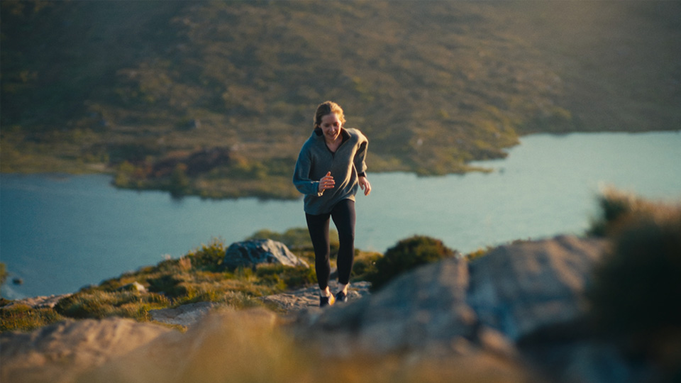
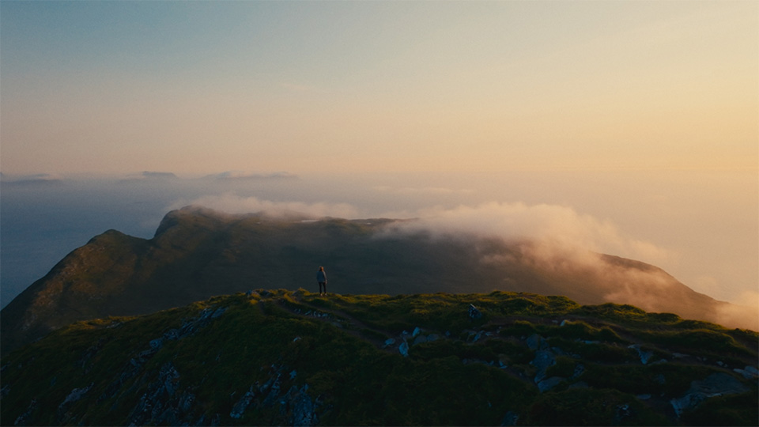
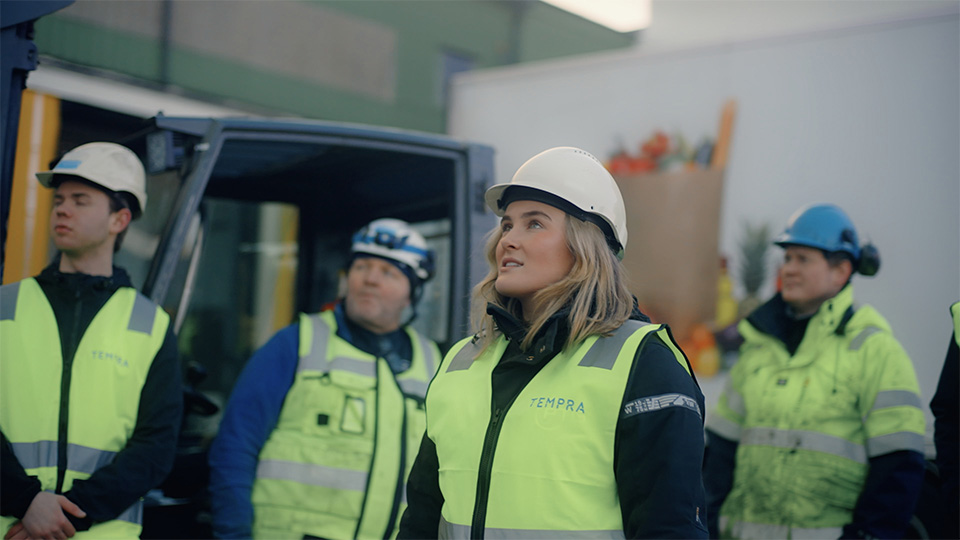
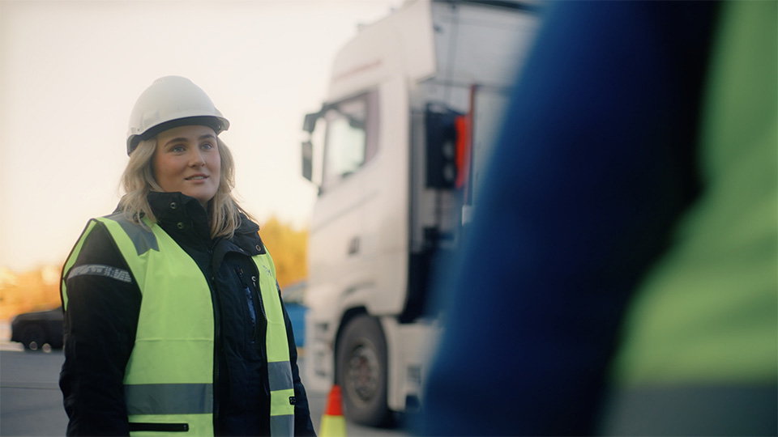
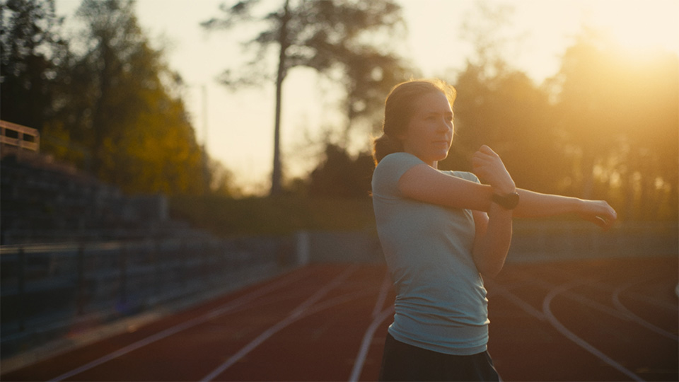
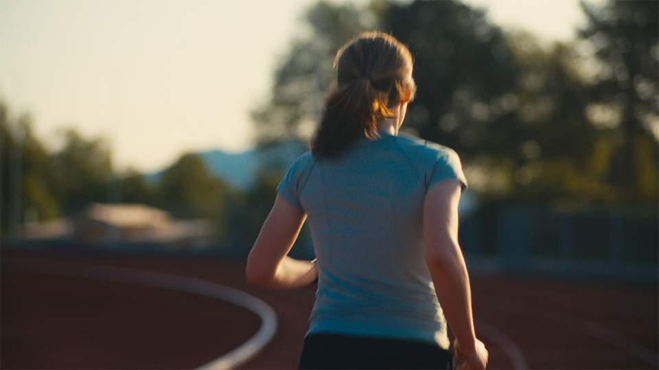

Director & cinematographer
based in Norway
Espen combines personal, meaningful storytelling with visually striking cinematography to bring your brand’s message to life.
Espen Gjelsten (b. 1985, Tønsberg) is a director and cinematographer based in Ålesund, Norway. His journey in filmmaking began with capturing skateboarding culture in the early 2000s.
With over 15 years of professional experience across cinematography, editing, color grading, and directing, Espen brings a unique ability to craft personal, visually striking films where story and visuals connect seamlessly.
His work blends emotional depth with striking visuals, creating stories that connect and leave a lasting impression.